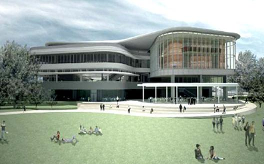

Conference Venue

The Ngee Ann Kongsi Auditorium
University Town, Education Resource Centre, Level 2
National University of Singapore
Download NUS Map and UTOWN Map
Getting to UTOWN
By MRT
Alight at Kent Ridge MRT Station (CC 24)
Exit the station via Exit A
Upon exit of the station, proceed towards Bus Stop 3: turn right and then left to the nearest bus stop. DO NOT walk through the underpass.
Board the NUS Internal Shuttle Bus D2 and Alight at UTOWN
Upon arrival at UTown, walk past Cheers/Subway (on your left) and Sappore (on your right), past the green field, head towards the building with the Starbucks (Education Resource Centre). Proceed to level 2 for entrance to the Ngee Ann Kongsi Auditorium.
By Taxi
Address to inform the driver would be NUS, University Town- Education Resource Centre
Upon arriving to UTOWN, you can inform the driver to follow the direction signages to Education Resource Centre
You can alight at the Education Resource Centre Drop-off point
Proceed to level 2 for entrance to the Ngee Ann Kongsi Auditorium.